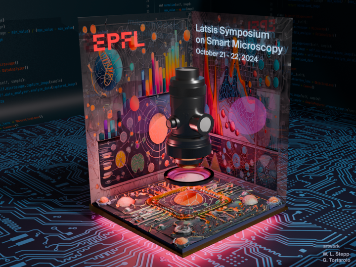

EPFL Latsis Symposium on Smart Microscopy
The EPFL is organizing the first conference on Smart Microscopy! The theme of the conference is “Enabling Discovery by Integrating Microscopy, Machine Learning, and Automation”.
The conference will take place in Lausanne on the 21st and 22nd of October this year. The deadline to register and for abstract submission is August 16, 2024.
The conference will have sessions on automation, open software, machine learning, and smart microscopy, with renowned international speakers.